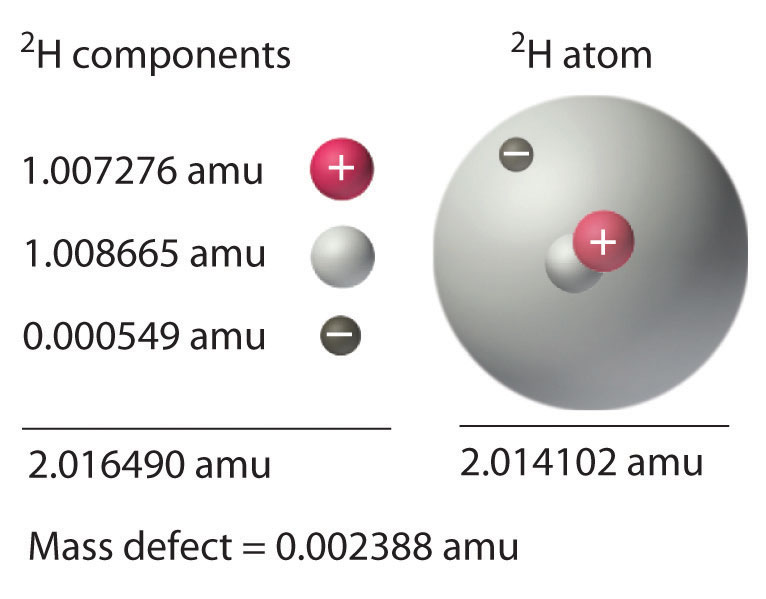
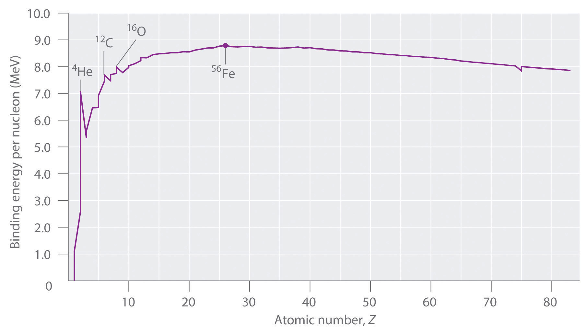
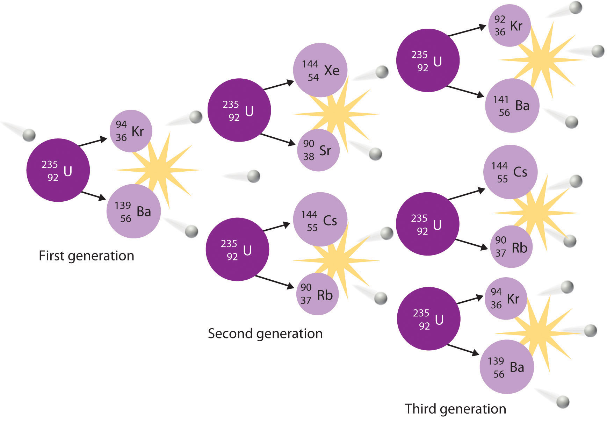
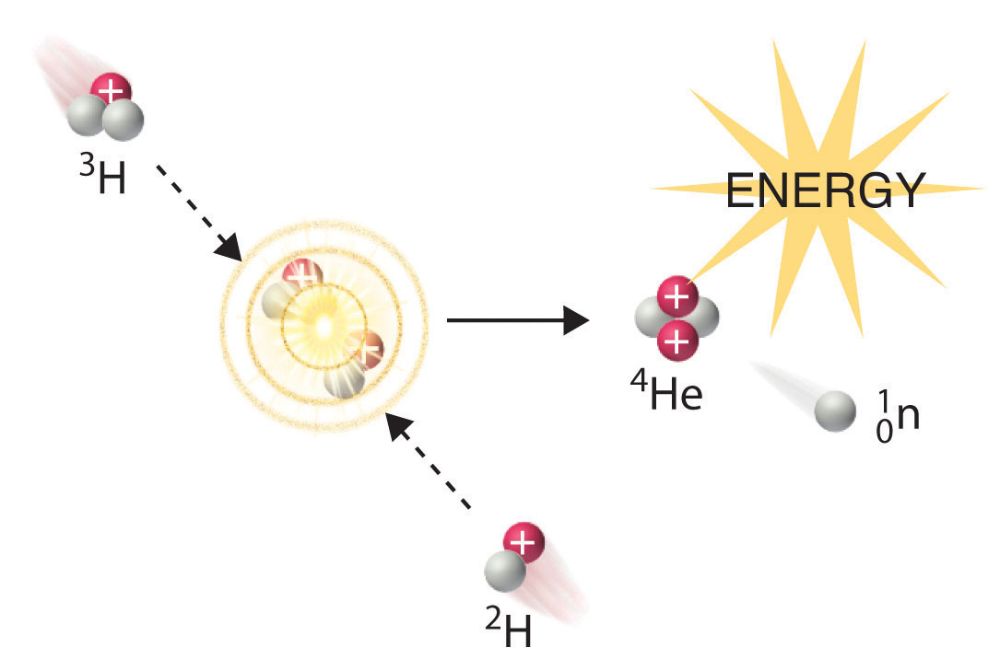

Nuclear reactions, like chemical reactions, are accompanied by changes in energy. The energy changes in nuclear reactions, however, are enormous compared with those of even the most energetic chemical reactions. In fact, the energy changes in a typical nuclear reaction are so large that they result in a measurable change of mass. In this section, we describe the relationship between mass and energy in nuclear reactions and show how the seemingly small changes in mass that accompany nuclear reactions result in the release of enormous amounts of energy.
The relationship between mass (m) and energy (E) was introduced in Chapter 6 "The Structure of Atoms" and is expressed in the following equation:
Equation 20.27
E = mc2where c is the speed of light (2.998 × 108 m/s), and E and m are expressed in units of joules and kilograms, respectively. Albert Einstein first derived this relationship in 1905 as part of his special theory of relativity: the mass of a particle is directly proportional to its energy. Thus according to Equation 20.27, every mass has an associated energy, and similarly, any reaction that involves a change in energy must be accompanied by a change in mass. This implies that all exothermic reactions should be accompanied by a decrease in mass, and all endothermic reactions should be accompanied by an increase in mass. Given the law of conservation of mass, how can this be true? (For more information on the conservation of mass, see Chapter 3 "Chemical Reactions".) The solution to this apparent contradiction is that chemical reactions are indeed accompanied by changes in mass, but these changes are simply too small to be detected.This situation is similar to the wave–particle duality discussed in Chapter 6 "The Structure of Atoms". As you may recall, all particles exhibit wavelike behavior, but the wavelength is inversely proportional to the mass of the particle (actually, to its momentum, the product of its mass and velocity). Consequently, wavelike behavior is detectable only for particles with very small masses, such as electrons. For example, the chemical equation for the combustion of graphite to produce carbon dioxide is as follows:
Equation 20.28
Combustion reactions are typically carried out at constant pressure, and under these conditions, the heat released or absorbed is equal to ΔH. As you learned in Chapter 18 "Chemical Thermodynamics", when a reaction is carried out at constant volume, the heat released or absorbed is equal to ΔE. For most chemical reactions, however, ΔE ≈ ΔH. If we rewrite Einstein’s equation as
Equation 20.29
we can rearrange the equation to obtain the following relationship between the change in mass and the change in energy:
Equation 20.30
Because 1 J = 1 (kg·m2)/s2, the change in mass is as follows:
Equation 20.31
This is a mass change of about 3.6 × 10−10 g/g carbon that is burned, or about 100-millionths of the mass of an electron per atom of carbon. In practice, this mass change is much too small to be measured experimentally and is negligible.
In contrast, for a typical nuclear reaction, such as the radioactive decay of 14C to 14N and an electron (a β particle), there is a much larger change in mass:
Equation 20.32
We can use the experimentally measured masses of subatomic particles and common isotopes given in Table 20.1 "Nuclear Decay Emissions and Their Symbols" and Chapter 33 "Appendix I: Experimentally Measured Masses of Selected Isotopes" to calculate the change in mass directly. The reaction involves the conversion of a neutral 14C atom to a positively charged 14N ion (with six, not seven, electrons) and a negatively charged β particle (an electron), so the mass of the products is identical to the mass of a neutral 14N atom. The total change in mass during the reaction is therefore the difference between the mass of a neutral 14N atom (14.003074 amu) and the mass of a 14C atom (14.003242 amu):
Equation 20.33
The difference in mass, which has been released as energy, corresponds to almost one-third of an electron. The change in mass for the decay of 1 mol of 14C is −0.000168 g = −1.68 × 10−4 g = −1.68 × 10−7 kg. Although a mass change of this magnitude may seem small, it is about 1000 times larger than the mass change for the combustion of graphite. The energy change is as follows:
Equation 20.34
The energy released in this nuclear reaction is more than 100,000 times greater than that of a typical chemical reaction, even though the decay of 14C is a relatively low-energy nuclear reaction.
Because the energy changes in nuclear reactions are so large, they are often expressed in kiloelectronvolts (1 keV = 103 eV), megaelectronvolts (1 MeV = 106 eV), and even gigaelectronvolts (1 GeV = 109 eV) per atom or particle. The change in energy that accompanies a nuclear reaction can be calculated from the change in mass using the relationship 1 amu = 931 MeV. The energy released by the decay of one atom of 14C is thus
Equation 20.35
Calculate the changes in mass (in atomic mass units) and energy (in joules per mole and electronvolts per atom) that accompany the radioactive decay of 238U to 234Th and an α particle. The α particle absorbs two electrons from the surrounding matter to form a helium atom.
Given: nuclear decay reaction
Asked for: changes in mass and energy
Strategy:
A Use the mass values in Table 20.1 "Nuclear Decay Emissions and Their Symbols" and Chapter 33 "Appendix I: Experimentally Measured Masses of Selected Isotopes" to calculate the change in mass for the decay reaction in atomic mass units.
B Use Equation 20.30 to calculate the change in energy in joules per mole.
C Use the relationship between atomic mass units and megaelectronvolts to calculate the change in energy in electronvolts per atom.
Solution:
A Using particle and isotope masses from Table 20.1 "Nuclear Decay Emissions and Their Symbols" and Chapter 33 "Appendix I: Experimentally Measured Masses of Selected Isotopes", we can calculate the change in mass as follows:
B Thus the change in mass for 1 mol of 238U is −0.004584 g or −4.584 × 10−6 kg. The change in energy in joules per mole is as follows:
ΔE = (Δm)c2 = (−4.584 × 10−6 kg)(2.998 × 108 m/s)2 = −4.120 × 1011 J/molC The change in energy in electronvolts per atom is as follows:
Exercise
Calculate the changes in mass (in atomic mass units) and energy (in kilojoules per mole and kiloelectronvolts per atom) that accompany the radioactive decay of tritium (3H) to 3He and a β particle.
Answer: Δm = −2.0 × 10−5 amu; ΔE = −1.9 × 106 kJ/mol = −19 keV/atom
We have seen that energy changes in both chemical and nuclear reactions are accompanied by changes in mass. Einstein’s equation, which allows us to interconvert mass and energy, has another interesting consequence: The mass of an atom is always less than the sum of the masses of its component particles. The only exception to this rule is hydrogen-1 (1H), whose measured mass of 1.007825 amu is identical to the sum of the masses of a proton and an electron. In contrast, the experimentally measured mass of an atom of deuterium (2H) is 2.014102 amu, although its calculated mass is 2.016490 amu:
Equation 20.36
The difference between the sum of the masses of the components and the measured atomic mass is called the mass defectThe difference between the sum of the masses of the components of an atom (protons, neutrons, and electrons) and the measured atomic mass. of the nucleus. Just as a molecule is more stable than its isolated atoms, a nucleus is more stable (lower in energy) than its isolated components. Consequently, when isolated nucleons assemble into a stable nucleus, energy is released. According to Equation 20.30, this release of energy must be accompanied by a decrease in the mass of the nucleus.
The amount of energy released when a nucleus forms from its component nucleons is the nuclear binding energyThe amount of energy released when a nucleus forms from its component nucleons, which corresponds to the mass defect of the nucleus. (Figure 20.15 "Nuclear Binding Energy in Deuterium"). In the case of deuterium, the mass defect is 0.002388 amu, which corresponds to a nuclear binding energy of 2.22 MeV for the deuterium nucleus. Because the magnitude of the mass defect is proportional to the nuclear binding energy, both values indicate the stability of the nucleus.
Just as a molecule is more stable (lower in energy) than its isolated atoms, a nucleus is more stable than its isolated components.
Figure 20.15 Nuclear Binding Energy in Deuterium
The mass of a 2H atom is less than the sum of the masses of a proton, a neutron, and an electron by 0.002388 amu; the difference in mass corresponds to the nuclear binding energy. The larger the value of the mass defect, the greater the nuclear binding energy and the more stable the nucleus.
Not all nuclei are equally stable. Chemists describe the relative stability of different nuclei by comparing the binding energy per nucleon, which is obtained by dividing the nuclear binding energy by the mass number (A) of the nucleus. As shown in Figure 20.16 "The Curve of Nuclear Binding Energy", the binding energy per nucleon increases rapidly with increasing atomic number until about Z = 26, where it levels off to about 8–9 MeV per nucleon and then decreases slowly. The initial increase in binding energy is not a smooth curve but exhibits sharp peaks corresponding to the light nuclei that have equal numbers of protons and neutrons (e.g., 4He, 12C, and 16O). As mentioned earlier, these are particularly stable combinations.
Because the maximum binding energy per nucleon is reached at 56Fe, all other nuclei are thermodynamically unstable with regard to the formation of 56Fe. Consequently, heavier nuclei (toward the right in Figure 20.16 "The Curve of Nuclear Binding Energy") should spontaneously undergo reactions such as alpha decay, which result in a decrease in atomic number. Conversely, lighter elements (on the left in Figure 20.16 "The Curve of Nuclear Binding Energy") should spontaneously undergo reactions that result in an increase in atomic number. This is indeed the observed pattern.
Figure 20.16 The Curve of Nuclear Binding Energy
This plot of the average binding energy per nucleon as a function of atomic number shows that the binding energy per nucleon increases with increasing atomic number until about Z = 26, levels off, and then decreases. The sharp peaks correspond to light nuclei that have equal numbers of protons and neutrons.
Heavier nuclei spontaneously undergo nuclear reactions that decrease their atomic number. Lighter nuclei spontaneously undergo nuclear reactions that increase their atomic number.
Calculate the total nuclear binding energy (in megaelectronvolts) and the binding energy per nucleon for 56Fe. The experimental mass of the nuclide is given in Chapter 33 "Appendix I: Experimentally Measured Masses of Selected Isotopes".
Given: nuclide and mass
Asked for: nuclear binding energy and binding energy per nucleon
Strategy:
A Sum the masses of the protons, electrons, and neutrons or, alternatively, use the mass of the appropriate number of 1H atoms (because its mass is the same as the mass of one electron and one proton).
B Calculate the mass defect by subtracting the experimental mass from the calculated mass.
C Determine the nuclear binding energy by multiplying the mass defect by the change in energy in electronvolts per atom. Divide this value by the number of nucleons to obtain the binding energy per nucleon.
Solution:
A An iron-56 atom has 26 protons, 26 electrons, and 30 neutrons. We could add the masses of these three sets of particles; however, noting that 26 protons and 26 electrons are equivalent to 26 1H atoms, we can calculate the sum of the masses more quickly as follows:
B We subtract to find the mass defect:
C The nuclear binding energy is thus 0.528462 amu × 931 MeV/amu = 492 MeV. The binding energy per nucleon is 492 MeV/56 nucleons = 8.79 MeV/nucleon.
Exercise
Calculate the total nuclear binding energy (in megaelectronvolts) and the binding energy per nucleon for 238U.
Answer: 1800 MeV/238U; 7.57 MeV/nucleon
First discussed in Section 20.2 "Nuclear Reactions", nuclear fissionThe splitting of a heavy nucleus into two lighter ones. is the splitting of a heavy nucleus into two lighter ones. Fission was discovered in 1938 by the German scientists Otto Hahn, Lise Meitner, and Fritz Strassmann, who bombarded a sample of uranium with neutrons in an attempt to produce new elements with Z > 92. They observed that lighter elements such as barium (Z = 56) were formed during the reaction, and they realized that such products had to originate from the neutron-induced fission of uranium-235:
Equation 20.37
This hypothesis was confirmed by detecting the krypton-92 fission product. As discussed in Section 20.2 "Nuclear Reactions", the nucleus usually divides asymmetrically rather than into two equal parts, and the fission of a given nuclide does not give the same products every time.
In a typical nuclear fission reaction, more than one neutron is released by each dividing nucleus. When these neutrons collide with and induce fission in other neighboring nuclei, a self-sustaining series of nuclear fission reactions known as a nuclear chain reactionA self-sustaining series of nuclear fission reactions. can result (Figure 20.16 "The Curve of Nuclear Binding Energy"). For example, the fission of 235U releases two to three neutrons per fission event. If absorbed by other 235U nuclei, those neutrons induce additional fission events, and the rate of the fission reaction increases geometrically. Each series of events is called a generation. Experimentally, it is found that some minimum mass of a fissile isotope is required to sustain a nuclear chain reaction; if the mass is too low, too many neutrons are able to escape without being captured and inducing a fission reaction. The minimum mass capable of supporting sustained fission is called the critical massThe minimum mass of a fissile isotope capable of supporting sustained fission.. This amount depends on the purity of the material and the shape of the mass, which corresponds to the amount of surface area available from which neutrons can escape, and on the identity of the isotope. If the mass of the fissile isotope is greater than the critical mass, then under the right conditions, the resulting supercritical mass can release energy explosively. The enormous energy released from nuclear chain reactions is responsible for the massive destruction caused by the detonation of nuclear weapons such as fission bombs, but it also forms the basis of the nuclear power industry.
Nuclear fusionThe combining of two light nuclei to produce a heavier, more stable nucleus., in which two light nuclei combine to produce a heavier, more stable nucleus, is the opposite of nuclear fission. As in the nuclear transmutation reactions discussed in Section 20.2 "Nuclear Reactions", the positive charge on both nuclei results in a large electrostatic energy barrier to fusion. This barrier can be overcome if one or both particles have sufficient kinetic energy to overcome the electrostatic repulsions, allowing the two nuclei to approach close enough for a fusion reaction to occur. The principle is similar to adding heat to increase the rate of a chemical reaction. (For more information on chemical kinetics, see Chapter 14 "Chemical Kinetics".) As shown in the plot of nuclear binding energy per nucleon versus atomic number in Figure 20.17 "A Nuclear Chain Reaction", fusion reactions are most exothermic for the lightest element. For example, in a typical fusion reaction, two deuterium atoms combine to produce helium-3, a process known as deuterium–deuterium fusion (D–D fusion):
Equation 20.38
Figure 20.17 A Nuclear Chain Reaction
The process is initiated by the collision of a single neutron with a 235U nucleus, which undergoes fission, as shown in Figure 20.6 "A Nuclear Transmutation Reaction". Because each neutron released can cause the fission of another 235U nucleus, the rate of a fission reaction accelerates geometrically. Each series of events is a generation.
In another reaction, a deuterium atom and a tritium atom fuse to produce helium-4 (Figure 20.18 "Nuclear Fusion"), a process known as deuterium–tritium fusion (D–T fusion):
Equation 20.39
Figure 20.18 Nuclear Fusion
In a nuclear fusion reaction, lighter nuclei combine to produce a heavier nucleus. As shown, fusion of 3H and 2H to give 4He and a neutron releases an enormous amount of energy. In principle, nuclear fusion can produce much more energy than fission, but very high kinetic energy is required to overcome electrostatic repulsions between the positively charged nuclei and initiate the fusion reaction.
Initiating these reactions, however, requires a temperature comparable to that in the interior of the sun (approximately 1.5 × 107 K). Currently, the only method available on Earth to achieve such a temperature is the detonation of a fission bomb. For example, the so-called hydrogen bomb (or H bomb) is actually a deuterium–tritium bomb (a D–T bomb), which uses a nuclear fission reaction to create the very high temperatures needed to initiate fusion of solid lithium deuteride (6LiD), which releases neutrons that then react with 6Li, producing tritium. The deuterium-tritium reaction releases energy explosively. Example 9 and its corresponding exercise demonstrate the enormous amounts of energy produced by nuclear fission and fusion reactions. In fact, fusion reactions are the power sources for all stars, including our sun.
Calculate the amount of energy (in electronvolts per atom and kilojoules per mole) released when the neutron-induced fission of 235U produces 144Cs, 90Rb, and two neutrons:
Given: balanced nuclear reaction
Asked for: energy released in electronvolts per atom and kilojoules per mole
Strategy:
A Following the method used in Example 7, calculate the change in mass that accompanies the reaction. Convert this value to the change in energy in electronvolts per atom.
B Calculate the change in mass per mole of 235U. Then use Equation 20.29 to calculate the change in energy in kilojoules per mole.
Solution:
A The change in mass that accompanies the reaction is as follows:
The change in energy in electronvolts per atom is as follows:
B The change in mass per mole of is −0.188386 g = −1.88386 × 10−4 kg, so the change in energy in kilojoules per mole is as follows:
Exercise
Calculate the amount of energy (in electronvolts per atom and kilojoules per mole) released when deuterium and tritium fuse to give helium-4 and a neutron:
Answer: ΔE = −17.6 MeV/atom = −1.697 × 109 kJ/mol
Nuclear reactions are accompanied by large changes in energy, which result in detectable changes in mass. The change in mass is related to the change in energy according to Einstein’s equation: ΔE = (Δm)c2. Large changes in energy are usually reported in kiloelectronvolts or megaelectronvolts (thousands or millions of electronvolts). With the exception of 1H, the experimentally determined mass of an atom is always less than the sum of the masses of the component particles (protons, neutrons, and electrons) by an amount called the mass defect of the nucleus. The energy corresponding to the mass defect is the nuclear binding energy, the amount of energy released when a nucleus forms from its component particles. In nuclear fission, nuclei split into lighter nuclei with an accompanying release of multiple neutrons and large amounts of energy. The critical mass is the minimum mass required to support a self-sustaining nuclear chain reaction. Nuclear fusion is a process in which two light nuclei combine to produce a heavier nucleus plus a great deal of energy.
How do chemical reactions compare with nuclear reactions with respect to mass changes? Does either type of reaction violate the law of conservation of mass? Explain your answers.
Why is the amount of energy released by a nuclear reaction so much greater than the amount of energy released by a chemical reaction?
Explain why the mass of an atom is less than the sum of the masses of its component particles.
The stability of a nucleus can be described using two values. What are they, and how do they differ from each other?
In the days before true chemistry, ancient scholars (alchemists) attempted to find the philosopher’s stone, a material that would enable them to turn lead into gold. Is the conversion of Pb → Au energetically favorable? Explain why or why not.
Describe the energy barrier to nuclear fusion reactions and explain how it can be overcome.
Imagine that the universe is dying, the stars have burned out, and all the elements have undergone fusion or radioactive decay. What would be the most abundant element in this future universe? Why?
Numerous elements can undergo fission, but only a few can be used as fuels in a reactor. What aspect of nuclear fission allows a nuclear chain reaction to occur?
How are transmutation reactions and fusion reactions related? Describe the main impediment to fusion reactions and suggest one or two ways to surmount this difficulty.
Using the information provided in Chapter 33 "Appendix I: Experimentally Measured Masses of Selected Isotopes", complete each reaction and calculate the amount of energy released from each in kilojoules.
Using the information provided in Chapter 33 "Appendix I: Experimentally Measured Masses of Selected Isotopes", complete each reaction and calculate the amount of energy released from each in kilojoules.
Using the information provided in Chapter 33 "Appendix I: Experimentally Measured Masses of Selected Isotopes", complete each reaction and calculate the amount of energy released from each in kilojoules per mole.
Using the information provided in Chapter 33 "Appendix I: Experimentally Measured Masses of Selected Isotopes", complete each reaction and then calculate the amount of energy released from each in kilojoules per mole.
Using the information provided in Chapter 33 "Appendix I: Experimentally Measured Masses of Selected Isotopes", predict whether each reaction is favorable and the amount of energy released or required in megaelectronvolts and kilojoules per mole.
Using the information provided, predict whether each reaction is favorable and the amount of energy released or required in megaelectronvolts and kilojoules per mole.
Calculate the total nuclear binding energy (in megaelectronvolts) and the binding energy per nucleon for 87Sr if the measured mass of 87Sr is 86.908877 amu.
Calculate the total nuclear binding energy (in megaelectronvolts) and the binding energy per nucleon for 60Ni.
The experimentally determined mass of 53Mn is 52.941290 amu. Find each of the following.
The experimentally determined mass of 29S is 28.996610 amu. Find each of the following.
Calculate the amount of energy that is released by the neutron-induced fission of 235U to give 141Ba, 92Kr (mass = 91.926156 amu), and three neutrons. Report your answer in electronvolts per atom and kilojoules per mole.
Calculate the amount of energy that is released by the neutron-induced fission of 235U to give 90Sr, 143Xe, and three neutrons. Report your answer in electronvolts per atom and kilojoules per mole.
Calculate the amount of energy released or required by the fusion of helium-4 to produce the unstable beryllium-8 (mass = 8.00530510 amu). Report your answer in kilojoules per mole. Do you expect this to be a spontaneous reaction?
Calculate the amount of energy released by the fusion of 6Li and deuterium to give two helium-4 nuclei. Express your answer in electronvolts per atom and kilojoules per mole.
How much energy is released by the fusion of two deuterium nuclei to give one tritium nucleus and one proton? How does this amount compare with the energy released by the fusion of a deuterium nucleus and a tritium nucleus, which is accompanied by ejection of a neutron? Express your answer in megaelectronvolts and kilojoules per mole. Pound for pound, which is a better choice for a fusion reactor fuel mixture?
757 MeV/atom, 8.70 MeV/nucleon
−173 MeV/atom; 1.67 × 1010 kJ/mol
ΔE = + 9.0 × 106 kJ/mol beryllium-8; no
D–D fusion: ΔE = −4.03 MeV/tritium nucleus formed = −3.89 × 108 kJ/mol tritium; D–T fusion: ΔE = −17.6 MeV/tritium nucleus = −1.70 × 109 kJ/mol; D–T fusion